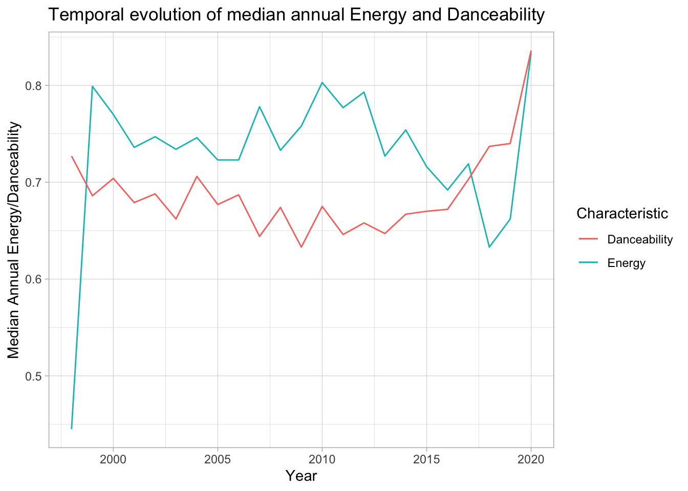

| year | num_songs |
|---|---|
| 1998 | 1 |
| 1999 | 38 |
| 2000 | 74 |
| 2001 | 108 |
| 2002 | 90 |
| 2003 | 97 |
| 2004 | 96 |
| 2005 | 104 |
| 2006 | 95 |
| 2007 | 94 |
| 2008 | 97 |
| 2009 | 84 |
| 2010 | 107 |
| 2011 | 99 |
| 2012 | 115 |
| 2013 | 89 |
| 2014 | 104 |
| 2015 | 99 |
| 2016 | 99 |
| 2017 | 111 |
| 2018 | 107 |
| 2019 | 89 |
| 2020 | 3 |
Dplyr and Tidyr lab
Exercise 1
Analyzing Spotify’s 2010-2019 Top Songs dataset to identify musical trends.
Question 1
The dataset contains 1879 songs from 835 different artists and 59 genres.
Question 2
Question 3
The most popular artist in the dataset is Rihanna with 23 distinct songs.
Question 4
| genre | min_tempo | max_tempo | mean_tempo | median_tempo | num_songs |
|---|---|---|---|---|---|
| Dance/Electronic | 90.8 | 174.0 | 124.9 | 126.0 | 37 |
| Folk/Acoustic, pop | 94.9 | 128.9 | 111.9 | 111.9 | 2 |
| Folk/Acoustic, rock | 84.2 | 84.2 | 84.2 | 84.2 | 1 |
| Folk/Acoustic, rock, pop | 138.6 | 138.6 | 138.6 | 138.6 | 1 |
| R&B | 71.8 | 170.7 | 106.9 | 100.5 | 13 |
| World/Traditional, Folk/Acoustic | 82.8 | 82.8 | 82.8 | 82.8 | 1 |
| World/Traditional, hip hop | 98.1 | 102.0 | 100.0 | 100.0 | 2 |
| World/Traditional, pop | 108.1 | 108.1 | 108.1 | 108.1 | 1 |
| World/Traditional, pop, Folk/Acoustic | 100.4 | 104.8 | 102.6 | 102.6 | 2 |
| World/Traditional, rock | 96.0 | 140.1 | 118.0 | 118.0 | 2 |
| World/Traditional, rock, pop | 132.0 | 132.0 | 132.0 | 132.0 | 1 |
| country | 103.1 | 205.6 | 138.2 | 136.0 | 9 |
| country, latin | 96.1 | 96.1 | 96.1 | 96.1 | 1 |
| easy listening | 157.9 | 157.9 | 157.9 | 157.9 | 1 |
| hip hop | 64.9 | 180.0 | 117.1 | 111.7 | 118 |
| hip hop, Dance/Electronic | 95.9 | 190.2 | 135.4 | 131.1 | 15 |
| hip hop, R&B | 100.2 | 151.2 | 125.7 | 125.7 | 2 |
| hip hop, country | 98.0 | 98.0 | 98.0 | 98.0 | 1 |
| hip hop, latin, Dance/Electronic | 172.0 | 172.0 | 172.0 | 172.0 | 1 |
| hip hop, pop | 73.0 | 203.9 | 119.1 | 120.0 | 261 |
| hip hop, pop, Dance/Electronic | 72.0 | 196.1 | 121.3 | 126.1 | 72 |
| hip hop, pop, R&B | 60.0 | 203.9 | 115.5 | 109.0 | 229 |
| hip hop, pop, R&B, Dance/Electronic | 82.8 | 127.9 | 103.9 | 101.0 | 3 |
| hip hop, pop, R&B, latin | 82.3 | 100.0 | 91.2 | 91.2 | 2 |
| hip hop, pop, country | 129.4 | 129.4 | 129.4 | 129.4 | 1 |
| hip hop, pop, latin | 89.7 | 180.2 | 127.2 | 127.0 | 14 |
| hip hop, pop, rock | 84.9 | 180.0 | 123.1 | 125.2 | 9 |
| hip hop, rock, pop | 90.1 | 90.1 | 90.1 | 90.1 | 1 |
| latin | 90.0 | 198.1 | 121.6 | 97.1 | 15 |
| metal | 79.0 | 147.4 | 106.2 | 102.0 | 9 |
| pop | 68.6 | 195.7 | 120.7 | 120.0 | 397 |
| pop, Dance/Electronic | 84.9 | 198.1 | 123.8 | 124.1 | 207 |
| pop, Folk/Acoustic | 76.0 | 171.8 | 118.4 | 110.0 | 8 |
| pop, R&B | 68.9 | 210.9 | 116.2 | 110.8 | 166 |
| pop, R&B, Dance/Electronic | 84.0 | 176.1 | 112.0 | 104.1 | 6 |
| pop, R&B, easy listening | 109.0 | 109.0 | 109.0 | 109.0 | 1 |
| pop, country | 97.9 | 147.9 | 130.5 | 136.9 | 8 |
| pop, easy listening, Dance/Electronic | 135.1 | 135.1 | 135.1 | 135.1 | 1 |
| pop, easy listening, jazz | 82.2 | 127.8 | 105.0 | 105.0 | 2 |
| pop, latin | 80.0 | 177.8 | 113.0 | 100.9 | 27 |
| pop, rock | 78.0 | 176.7 | 121.1 | 119.0 | 26 |
| pop, rock, Dance/Electronic | 87.0 | 189.9 | 134.0 | 136.0 | 12 |
| pop, rock, Folk/Acoustic | 103.0 | 113.0 | 108.0 | 108.0 | 2 |
| pop, rock, metal | 83.0 | 155.8 | 128.9 | 134.7 | 14 |
| rock | 82.0 | 199.9 | 130.5 | 123.8 | 56 |
| rock, Dance/Electronic | 128.0 | 128.0 | 128.0 | 128.0 | 1 |
| rock, Folk/Acoustic, easy listening | 123.0 | 123.0 | 123.0 | 123.0 | 1 |
| rock, Folk/Acoustic, pop | 80.5 | 80.5 | 80.5 | 80.5 | 1 |
| rock, R&B, Folk/Acoustic, pop | 106.0 | 106.0 | 106.0 | 106.0 | 1 |
| rock, blues | 123.9 | 141.9 | 132.9 | 132.9 | 2 |
| rock, blues, latin | 97.9 | 128.0 | 112.9 | 112.9 | 2 |
| rock, classical | 81.7 | 81.7 | 81.7 | 81.7 | 1 |
| rock, easy listening | 115.0 | 115.0 | 115.0 | 115.0 | 1 |
| rock, metal | 89.3 | 188.0 | 127.4 | 120.1 | 36 |
| rock, pop | 69.0 | 184.1 | 123.8 | 124.6 | 38 |
| rock, pop, Dance/Electronic | 113.0 | 182.0 | 135.8 | 127.4 | 8 |
| rock, pop, metal | 126.1 | 152.0 | 140.3 | 141.5 | 4 |
| rock, pop, metal, Dance/Electronic | 105.0 | 105.0 | 105.0 | 105.0 | 1 |
| set() | 68.5 | 184.8 | 120.1 | 127.0 | 22 |
Question 5
| year | median_energy | median_danceability |
|---|---|---|
| 1998 | 0.445 | 0.727 |
| 1999 | 0.799 | 0.686 |
| 2000 | 0.770 | 0.704 |
| 2001 | 0.736 | 0.679 |
| 2002 | 0.747 | 0.688 |
| 2003 | 0.734 | 0.662 |
| 2004 | 0.746 | 0.706 |
| 2005 | 0.723 | 0.677 |
| 2006 | 0.723 | 0.687 |
| 2007 | 0.778 | 0.644 |
| 2008 | 0.733 | 0.674 |
| 2009 | 0.758 | 0.633 |
| 2010 | 0.803 | 0.675 |
| 2011 | 0.777 | 0.646 |
| 2012 | 0.793 | 0.658 |
| 2013 | 0.727 | 0.647 |
| 2014 | 0.754 | 0.667 |
| 2015 | 0.716 | 0.670 |
| 2016 | 0.692 | 0.672 |
| 2017 | 0.719 | 0.703 |
| 2018 | 0.633 | 0.737 |
| 2019 | 0.662 | 0.740 |
| 2020 | 0.834 | 0.836 |
Question 6

Exercise 2
Exercise 2 analyzes the UCI students’ dropout dataset.
Question 1
| Gender | Marital Status | Median Age |
|---|---|---|
| Male | single | 20.0 |
| Male | married | 37.0 |
| Male | divorced | 40.5 |
| Male | widower | 43.0 |
| Male | facto union | 34.0 |
| Male | legally separated | 55.0 |
| Female | single | 19.0 |
| Female | married | 34.0 |
| Female | divorced | 38.0 |
| Female | widower | 21.0 |
| Female | facto union | 27.0 |
| Female | legally separated | 41.0 |
Question 2
| Marital Status | Female | Male |
|---|---|---|
| single | 20.0 | 19 |
| married | 37.0 | 34 |
| divorced | 40.5 | 38 |
| widower | 43.0 | 21 |
| facto union | 34.0 | 27 |
| legally separated | 55.0 | 41 |
In Question 2, the medians from Question 1 were transformed using the pivot function, reorganizing data with “Marital Status” as rows and distinct “Gender” as columns for a streamlined table representation.
Question 3
| Target | Curricular units 1st sem (credited) | Curricular units 1st sem (enrolled) | Curricular units 1st sem (evaluations) | Curricular units 1st sem (approved) | Curricular units 1st sem (grade) | Curricular units 1st sem (without evaluations) | Curricular units 2nd sem (credited) | Curricular units 2nd sem (enrolled) | Curricular units 2nd sem (evaluations) | Curricular units 2nd sem (approved) | Curricular units 2nd sem (grade) | Curricular units 2nd sem (without evaluations) |
|---|---|---|---|---|---|---|---|---|---|---|---|---|
| Dropout | 0.61 | 5.82 | 7.75 | 2.55 | 7.26 | 0.19 | 0.45 | 5.78 | 7.17 | 1.94 | 5.90 | 0.24 |
| Graduate | 0.85 | 6.67 | 8.28 | 6.23 | 12.64 | 0.09 | 0.67 | 6.63 | 8.14 | 6.18 | 12.70 | 0.08 |
| Enrolled | 0.51 | 5.96 | 9.34 | 4.32 | 11.13 | 0.18 | 0.36 | 5.94 | 9.44 | 4.06 | 11.12 | 0.19 |
Question 4
| Units | Dropout | Graduate | Enrolled |
|---|---|---|---|
| Curricular units 1st sem (credited) | 0.61 | 0.85 | 0.51 |
| Curricular units 1st sem (enrolled) | 5.82 | 6.67 | 5.96 |
| Curricular units 1st sem (evaluations) | 7.75 | 8.28 | 9.34 |
| Curricular units 1st sem (approved) | 2.55 | 6.23 | 4.32 |
| Curricular units 1st sem (grade) | 7.26 | 12.64 | 11.13 |
| Curricular units 1st sem (without evaluations) | 0.19 | 0.09 | 0.18 |
| Curricular units 2nd sem (credited) | 0.45 | 0.67 | 0.36 |
| Curricular units 2nd sem (enrolled) | 5.78 | 6.63 | 5.94 |
| Curricular units 2nd sem (evaluations) | 7.17 | 8.14 | 9.44 |
| Curricular units 2nd sem (approved) | 1.94 | 6.18 | 4.06 |
| Curricular units 2nd sem (grade) | 5.90 | 12.70 | 11.12 |
| Curricular units 2nd sem (without evaluations) | 0.24 | 0.08 | 0.19 |
In Question 4, the means from Question 3 were reshaped using the pivot functions, presenting Curricular Units as rows and Target variables as columns, creating a more compact table format.